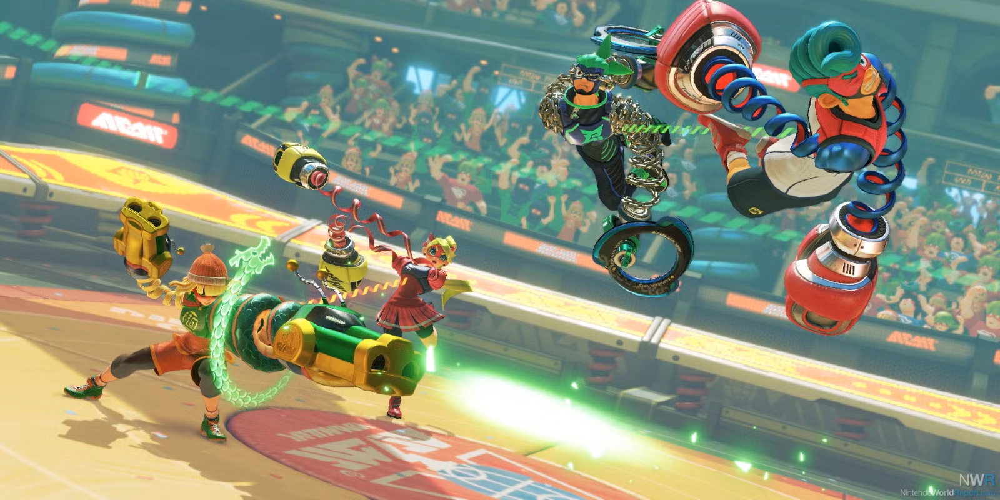
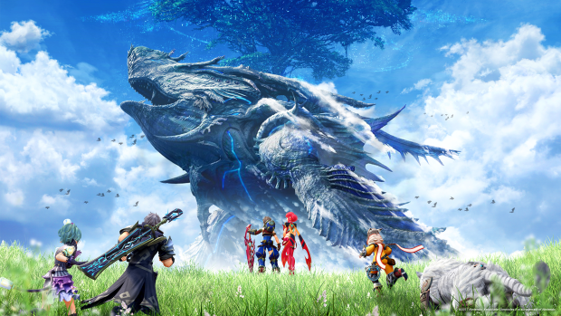
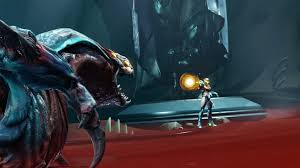
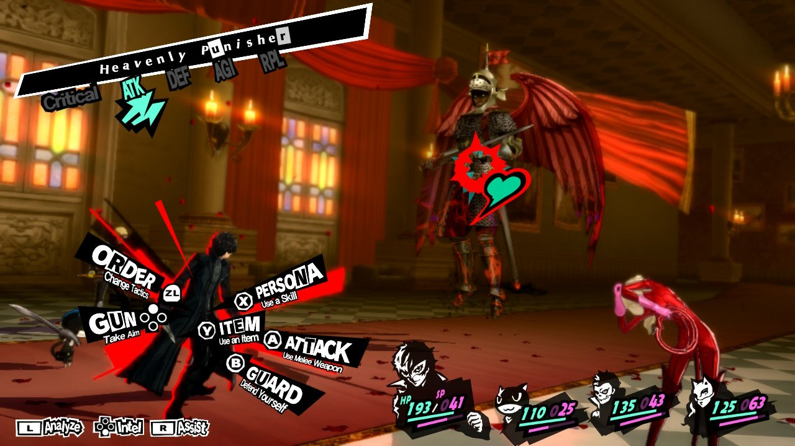
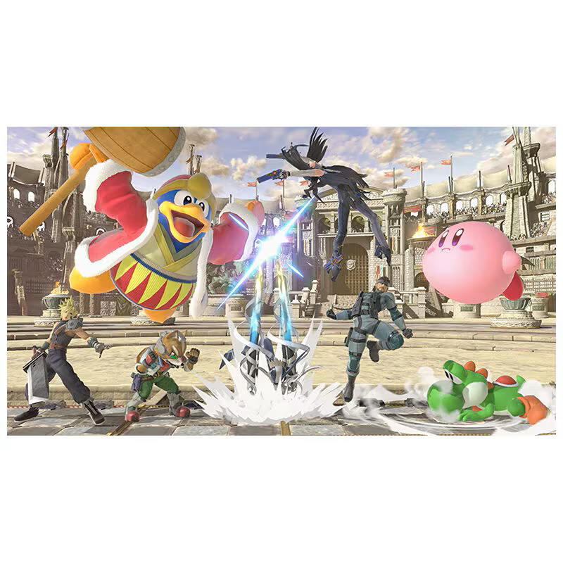
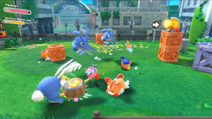
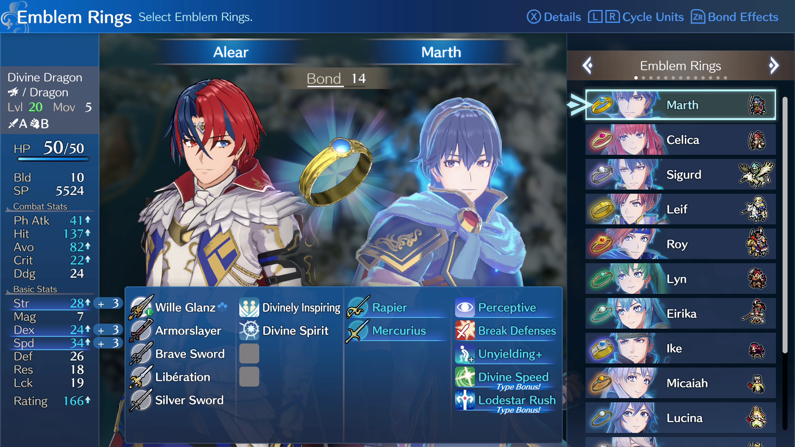

The objective top 10 Nintendo Switch games of all time
Agree or perish
It's no secret that the Nintendo Switch is very much on it's way to being the most sucessful console ever in gaming history. Part of that is because it's a hybrid console, so it's perfect for letting you take the fun with you, anytime, anywhere. But the other is that it has a slew of fantastic games, from already-record beating 1st parties in several genres, to a lot surprisingly high quality 3rd party ports like Doom,Witcher 3, and even Skyrim. And they just kept coming month after month
With the Nintendo Switch being more than 7 seven years old and with a backwards compatible sequel on the horizon, this begs the question: what games should a person buying the sucessor get if they somehow missed out on the first Switch? There'll always be someone who missed out on the original, so what should they go back and give a try? Come find out this retrospective.

Anyone remember Wii Boxing in Wii Sports? Well, ARMS is like that but semi expanded into a 3D Arena Fighter. Just like Wii Boxing, regardless of your skill level, it's absolutely a pick up and play type of game, it has no complicated combos, movement, or mechanics. Instead relying on whoever your unique character and ARMS (boxing gloves) loadouts are, with well over 1000 combinations to choose from in total.
The big reason this all works is works is because of the game's setting. This is a unique world where people sometimes wake up to spring-like appendages and superpowers called "ARMS" and go fight each other in the sports tournament...also called "ARMS". Because of this, all sorts of wacky, charming characters can come together to fight. Be it a bouncy, inflatable candy clown or a gooey blob held together by springy DNA strands.
While admittably, the game is a bit behind in terms of content, and isn't exactly populated nowadays (although you'll more than get a response on discord) it can more than be worth the prize if you play it with a friend. It does have some party game modes and casual stages if they're into that.
#9 Xenoblade Chronicles 2

Xenoblade Chronicles is an huge open world RPG in the vein of something like Skyrim, and it usually has one motto: "if you can see it, you can go to it." Sound familar? This is because the franchise inspired the juggernaut The Legend of Zelda- Breath of the Wild, who uses the same mentality.
What the game trades in world size, it more than makes up with characters, soundtrack, content, and an extremely engaging battle system and world. With all of that serving as frosting for the cake that is the game's story. Being a game all about what would happen if humanity lived on the backs of titans and if those landmasses started to become all the scarcer.
While it's augment equipping gacha system isn't for everyone, and the tutorials are terrible. If you give the game a chance you find out why Nintendo was so keen on having its makers: Monolith Soft, help out on just about every major 1st party Switch game.
To see our full review go here
#8 Metroid Dread

In especially the modern gaming space it's rare for a game that's been in devolpment for at least 10 years to see the light of day at all, but it's even rarer for it to come out feeling like the game we just never got 15 years ago.
Dread is a lot like Doom Eternal, sporting faster than ever combat, intutive controls, and an immersive atmosphere (only helped by the jump in power), which all makes you feel like the cool bounty hunter we all know and love Samus for being. This is immportant as the threat level has gone up with it, featuring segments where you'll have to face untouchable killer robots named EMMI, that'll literally give you a run for your money.
While Metroidvania fans might be a bit disappointed with the lack of backtracking, and newcomers might be a bit put of by how hard the bosses and occassionally tricky puzzles, this is absoulutely a game everyone should try at least once.
#7 Donkey Kong Country- Tropical Freeze

While the Wii U might go down as one of the worst systems out there, that doesn't mean all of its games will. Tropical Freeze is a platformer with stellar level design, a ton of charm and detail bursting in every corner, and fantastic music. In that sense, it's the Super Mario Wonder that came well before Super Mario Wonder was even able to be Super Mario Wonder.
Then you get to exploring the levels for the hidden KONG letters and puzzles pieces and it becomes a different ballgame. You'll go postively bananas trying to get everything! This game can be surprisingly challenging at times, and the goal to get 100% only increases that. Thankfully, the Switch version comes with a new mode to ease on the difficulty.
#6 Persona 5 Royal

Yeah, I know Persona 5 making a top 10 list isn't exactly an original take, but there's a good reason. It's got insanely well-written and charming characters, some of the best visuals and music in the genre-if not industry entirely, easy to pick up yet still engaging combat, a story with high stakes that can hit surprisingly close to home, and is basically the pioneer of one of the best ideas to grace the genre: managing daily "real life" life time with dungeon training to raise your stats.
The game gives you the role of an High school student who got wrongly accused from trying stop an assault. Upon arriving at his new city for rehabilitation, he arrives in the Metaverse-the manifestation of cognitive worlds of people who have become too corrupt, and finds out he can turn those people good from inside there by stealing their twisted desires. Forming the Phantom Theives of Hearts, he sets of to stop all the twisted people he can from corrupting any further.
Even if you aren't that big into RPGs, because of this setup, you will find something to enjoy. Whether it's chilling with friends in the real world, or dungeon crawling to traditionally become stronger, there will be something for everyone.

I mean just look at that image alone, how many video games can Yoshi can fight King Dedede, Cloud Strife, Corrin, and whatever Bayonetta is? Smash Ultimate is pretty much the ultimate gaming collab, with over 80 characters, 115 stages (339 if including Omega and Alpha variants), and over 1,500 collectibles. The game is also very beginner friendly, just like the aforementioned ARMS, with several rulesets that can change that from wacky stages to over dozens of items to encouraging 7 other players to join the fight. With this many combinations, it'll be well over 1000 hours before you feel you've seen everything.
This game does come with absolutely the worst online of any Switch game, both infastructure and quality-wise. Which doesn't help the...awkward balancing one bit. As well as it can also have very grindy single player modes, but this is absolutely worth being any gamer's shelf.

This has a pretty unique premise: in a magically medieval world a mercenary with a weird voice birthmark and voice in their head runs into 3 nation's nobility members, and becomes their teacher at an academy. While teaching them, they eventually go to war with each other, the mercenary guides whatever noble they swore allegiance with to victory, all while finding out the shading deals of both them, their past, their academy, that weird voice, and the other nations.
Because of this setup, this means that the game completely revolves around strategy. From choosing which campaign you swear allegiance to, to what friendships your subornates forge for skills, what classes,weapons, and skills characters should pursue, how all of your allies fight in the battlefield, or even what conversations you trigger to try and piece together the larger mystery of what's going on. What helps with all of this are elements of the aforementioned everyday life system from Persona and the game's fantastic characters and voice work.
While this game is a "Strategy" RPG, it is actually a little lacking in the "strategy" part, having very repetibve battle conditions. The game is also a bit behind graphically, and occassionally has frame rate issues, but isn't too bad.

In almost every long going game series, the goal is to jump into 3D as soon as possible, Kirby has always been the exception, being perfectly happy in 2D and tried to expand what it did well while doing so. So this game decided to do 1 thing, and 1 thing only: what if we did everything it's been doing well... but finally in 3D, and it did so wonderfully.
But what did it already do so well, and how was it expanded upon? For starters, Kirby has always been a bright kiddy series with dark undertones, and that's more explored than ever thanks to Kirby being transported to an apocalyptic version of our own. It also keeps all of that cutesy, bubbily charm the series is known for, only expanded upon with the introduction of Waddle Dees being Kirby's unapologetic friends for the first time- and a town for them all to hang out in, expanding as you save more from capture. It also expands on having Mario Odyssey-esque variety thanks to the game's main gimmick: mouthful mode, having Kirby attach himself to a real world object, giving him puzzle and gameplay solving opportunties, in addition to his normal copy abilities.
It can be a little short in the main story, but does have a good package size all around once you include sub modes and collectible hunting.

Yeah, what can I say? I'm a sucker for this series, and if any chance you are too or even want a decent gateway into the series, I'd definitely recommend checking this one out. This is actually a pretty approachable game, all thanks to its star gimmick: Engage rings. In other words, super state fusions with all of the previous games' MCs, enabling super abilities, weapons, and inheritable skills.
If you liked its predecessor: Three Houses, you're bound to like more of the Strategy RPG goodness this game offers. While the doesn't quite have the same amount of story intrigue(instead having a game as campy as its Opening song), the route choosing mechanic, or the Persona-esque time system, it more than makes up for it with its more (literally and figuratively) colorful cast of characters and the bigger empathesis on the "Strategy" part, with more varied win conditions and playstyles thanks to the Engage ring system.
Just be warned, as you'd expect from an would-have-been anniversary title, there are references to the other Fire Emblem games. Nothing too spoilery, but just a heads up. The game also starts a little slow, and has starts off with the overeccentric characters. It's a slow and campy burn, but it gets better.

Unless you live under a rock, Mario as franchise needs no introduction, and might be a problem. It kept to its aesthetic and feel for well over a decade with the New Super Mario Bros. series for so long that it stopped doing new things, keeping it safe to a fault as a result. With Wonder, Nintendo took that reputation as a challenge to make one of the most weird, different, and dare I say...wonderful games they made yet.
Wonder's star attraction is the Wonder flower, with this it embraces being like a box of chocolates: you never know what you're gonna get. These flowers can do virtually anything, from turning the level into rhythm to putting you into space. Nintendo has been good about making Mario fun to play no matter what, but because of this it's fun to experience too. What helps with this are the sheer amount of animations and the artstyle. There is almost always at least one new animation you haven't seen yet, packed with personality, and put into Shigehisa Nakaue's-esque style.
The game is a bit lacking in the new traditional power-ups.department, however. It's also really easy most of the time, with a mode that becomes even easier if you simply want to play as Yoshi or Nabbit.